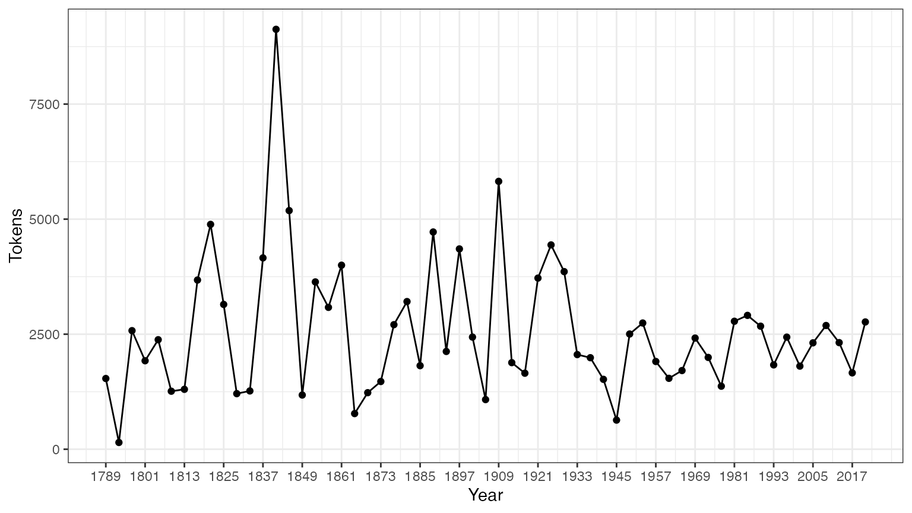
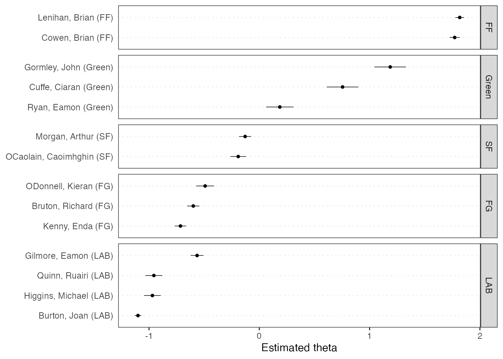

Installing the package
Since quanteda is available on CRAN, you can install by using your GUI’s R package installer, or execute:
install.packages("quanteda")See an instructions at https://github.com/quanteda/quanteda to install the (development) GitHub version.
Additional recommended packages:
The following packages contain modularised functions that were formerly part of quanteda, and we recommend that you always install them along with quanteda:
-
quanteda.textmodels:
Functions for scaling and classifying textual data.
-
quanteda.textstats:
Statistics for textual data.
- quanteda.textplots: Statistics for textual data.
The following packages work well with or extend quanteda and we recommend that you also install them:
readtext: An easy way to read text data into R, from almost any input format.
spacyr: NLP using the spaCy library, including part-of-speech tagging, entity recognition, and dependency parsing.
-
quanteda.corpora: Additional textual data for use with quanteda.
remotes::install_github("quanteda/quanteda.corpora") -
quanteda.dictionaries: Various dictionaries for use with quanteda, including the function
liwcalike(), an R implementation of the Linguistic Inquiry and Word Count approach to text analysis.remotes::install_github("kbenoit/quanteda.dictionaries")
Creating a Corpus
You load the package to access to functions and data in the package.
Currently available corpus sources
quanteda has a simple and powerful companion package
for loading texts: readtext.
The main function in this package, readtext(), takes a file
or fileset from disk or a URL, and returns a type of data.frame that can
be used directly with the corpus() constructor function, to
create a quanteda corpus object.
readtext() works on:
- text (
.txt) files; - comma-separated-value (
.csv) files; - XML formatted data;
- data from the Facebook API, in JSON format;
- data from the Twitter API, in JSON format; and
- generic JSON data.
The corpus constructor command corpus() works directly
on:
- a vector of character objects, for instance that you have already loaded into the workspace using other tools;
- a
VCorpuscorpus object from the tm package. - a data.frame containing a text column and any other document-level metadata.
Building a corpus from a character vector
The simplest case is to create a corpus from a vector of texts already in memory in R. This gives the advanced R user complete flexibility with his or her choice of text inputs, as there are almost endless ways to get a vector of texts into R.
If we already have the texts in this form, we can call the corpus
constructor function directly. We can demonstrate this on the built-in
character object of the texts about immigration policy extracted from
the 2010 election manifestos of the UK political parties (called
data_char_ukimmig2010).
## Corpus consisting of 9 documents, showing 9 documents:
##
## Text Types Tokens Sentences
## BNP 1125 3280 88
## Coalition 142 260 4
## Conservative 251 499 15
## Greens 322 679 21
## Labour 298 683 29
## LibDem 251 483 14
## PC 77 114 5
## SNP 88 134 4
## UKIP 346 723 26If we wanted, we could add some document-level variables – what quanteda calls docvars – to this corpus.
We can do this using the R’s names() function to get the
names of the character vector data_char_ukimmig2010, and
assign this to a document variable (docvar).
docvars(corp_uk, "Party") <- names(data_char_ukimmig2010)
docvars(corp_uk, "Year") <- 2010
summary(corp_uk)## Corpus consisting of 9 documents, showing 9 documents:
##
## Text Types Tokens Sentences Party Year
## BNP 1125 3280 88 BNP 2010
## Coalition 142 260 4 Coalition 2010
## Conservative 251 499 15 Conservative 2010
## Greens 322 679 21 Greens 2010
## Labour 298 683 29 Labour 2010
## LibDem 251 483 14 LibDem 2010
## PC 77 114 5 PC 2010
## SNP 88 134 4 SNP 2010
## UKIP 346 723 26 UKIP 2010Loading in files using the readtext package
require(readtext)
# Twitter json
dat_json <- readtext("social_media/zombies/tweets.json")
corp_twitter <- corpus(dat_json)
summary(corp_twitter, 5)
# generic json - needs a textfield specifier
dat_sotu <- readtext("corpora/sotu/sotu.json", text_field = "text")
summary(corpus(dat_sotu), 5)
# text file
dat_txtone <- readtext("corpora/project_gutenberg/pg2701.txt")
summary(corpus(dat_txtone), 5)
# multiple text files
dat_txtmultiple1 <- readtext("corpora/inaugural/*.txt")
summary(corpus(dat_txtmultiple1), 5)
# multiple text files with docvars from filenames
dat_txtmultiple2 <- readtext("corpora/inaugural/*.txt",
docvarsfrom = "filenames", sep = "-",
docvarnames = c("Year", "President"))
summary(corpus(dat_txtmultiple2), 5)
# XML data
dat_xml <- readtext("xmlData/plant_catalog.xml", text_field = "COMMON")
summary(corpus(dat_xml), 5)
# csv file
write.csv(data.frame(inaug_speech = as.character(data_corpus_inaugural),
docvars(data_corpus_inaugural)),
file = "/tmp/inaug_texts.csv", row.names = FALSE)
dat_csv <- readtext("/tmp/inaug_texts.csv", text_field = "inaug_speech")
summary(corpus(dat_csv), 5)Working with a quanteda corpus
Corpus principles
A corpus is designed to be a “library” of original documents that have been converted to plain, UTF-8 encoded text, and stored along with meta-data at the corpus level and at the document-level. We have a special name for document-level meta-data: docvars. These are variables or features that describe attributes of each document.
A corpus is designed to be a more or less static container of texts with respect to processing and analysis. This means that the texts in corpus are not designed to be changed internally through (for example) cleaning or pre-processing steps, such as stemming or removing punctuation. Rather, texts can be extracted from the corpus as part of processing, and assigned to new objects, but the idea is that the corpus will remain as an original reference copy so that other analyses – for instance those in which stems and punctuation were required, such as analysing a reading ease index – can be performed on the same corpus.
A corpus is a special form of character vector, meaning most functions that work with a character input will also work on a corpus. But a corpus object (as do other quanteda core objects) has its own convenient print method.
print(data_corpus_inaugural)## Corpus consisting of 59 documents and 4 docvars.
## 1789-Washington :
## "Fellow-Citizens of the Senate and of the House of Representa..."
##
## 1793-Washington :
## "Fellow citizens, I am again called upon by the voice of my c..."
##
## 1797-Adams :
## "When it was first perceived, in early times, that no middle ..."
##
## 1801-Jefferson :
## "Friends and Fellow Citizens: Called upon to undertake the du..."
##
## 1805-Jefferson :
## "Proceeding, fellow citizens, to that qualification which the..."
##
## 1809-Madison :
## "Unwilling to depart from examples of the most revered author..."
##
## [ reached max_ndoc ... 53 more documents ]To coerce a corpus to a plain character type, stripping its special
attributes, use as.character().
as.character(data_corpus_inaugural)[2]## 1793-Washington
## "Fellow citizens, I am again called upon by the voice of my country to execute the functions of its Chief Magistrate. When the occasion proper for it shall arrive, I shall endeavor to express the high sense I entertain of this distinguished honor, and of the confidence which has been reposed in me by the people of united America.\n\nPrevious to the execution of any official act of the President the Constitution requires an oath of office. This oath I am now about to take, and in your presence: That if it shall be found during my administration of the Government I have in any instance violated willingly or knowingly the injunctions thereof, I may (besides incurring constitutional punishment) be subject to the upbraidings of all who are now witnesses of the present solemn ceremony.\n\n "To summarize the texts from a corpus, we can call a
summary() method defined for a corpus.
summary(data_corpus_inaugural, n = 5)## Corpus consisting of 59 documents, showing 5 documents:
##
## Text Types Tokens Sentences Year President FirstName
## 1789-Washington 625 1537 23 1789 Washington George
## 1793-Washington 96 147 4 1793 Washington George
## 1797-Adams 826 2577 37 1797 Adams John
## 1801-Jefferson 717 1923 41 1801 Jefferson Thomas
## 1805-Jefferson 804 2380 45 1805 Jefferson Thomas
## Party
## none
## none
## Federalist
## Democratic-Republican
## Democratic-RepublicanWe can save the output from the summary command as a data frame, and plot some basic descriptive statistics with this information:
tokeninfo <- summary(data_corpus_inaugural)
tokeninfo$Year <- docvars(data_corpus_inaugural, "Year")
if (require(ggplot2))
ggplot(data = tokeninfo, aes(x = Year, y = Tokens, group = 1)) +
geom_line() +
geom_point() +
scale_x_continuous(labels = c(seq(1789, 2017, 12)), breaks = seq(1789, 2017, 12)) +
theme_bw()## Loading required package: ggplot2
# longest inaugural address: William Henry Harrison
tokeninfo[which.max(tokeninfo$Tokens), ]## Text Types Tokens Sentences Year President FirstName Party
## 14 1841-Harrison 1896 9125 210 1841 Harrison William Henry WhigTools for handling corpus objects
Adding two corpus objects together
The + operator provides a simple method for
concatenating two corpus objects. If they contain different sets of
document-level variables, these will be stitched together in a fashion
that guarantees that no information is lost. Corpus-level meta-data is
also concatenated.
corp1 <- head(data_corpus_inaugural, 2)
corp2 <- tail(data_corpus_inaugural, 2)
corp3 <- corp1 + corp2
summary(corp3)## Corpus consisting of 4 documents, showing 4 documents:
##
## Text Types Tokens Sentences Year President FirstName Party
## 1789-Washington 625 1537 23 1789 Washington George none
## 1793-Washington 96 147 4 1793 Washington George none
## 2017-Trump 582 1660 88 2017 Trump Donald J. Republican
## 2021-Biden 812 2766 216 2021 Biden Joseph R. DemocraticSubsetting corpus objects
There is a method of the corpus_subset() function
defined for corpus objects, where a new corpus can be extracted based on
logical conditions applied to docvars:
summary(corpus_subset(data_corpus_inaugural, Year > 1990))## Corpus consisting of 8 documents, showing 8 documents:
##
## Text Types Tokens Sentences Year President FirstName Party
## 1993-Clinton 642 1833 81 1993 Clinton Bill Democratic
## 1997-Clinton 773 2436 111 1997 Clinton Bill Democratic
## 2001-Bush 621 1806 97 2001 Bush George W. Republican
## 2005-Bush 772 2312 99 2005 Bush George W. Republican
## 2009-Obama 938 2689 110 2009 Obama Barack Democratic
## 2013-Obama 814 2317 88 2013 Obama Barack Democratic
## 2017-Trump 582 1660 88 2017 Trump Donald J. Republican
## 2021-Biden 812 2766 216 2021 Biden Joseph R. Democratic
summary(corpus_subset(data_corpus_inaugural, President == "Adams"))## Corpus consisting of 2 documents, showing 2 documents:
##
## Text Types Tokens Sentences Year President FirstName
## 1797-Adams 826 2577 37 1797 Adams John
## 1825-Adams 1003 3147 74 1825 Adams John Quincy
## Party
## Federalist
## Democratic-RepublicanExploring corpus texts
The kwic function (keywords-in-context) performs a
search for a word and allows us to view the contexts in which it
occurs:
data_tokens_inaugural <- tokens(data_corpus_inaugural)
kwic(data_tokens_inaugural, pattern = "terror")## Keyword-in-context with 8 matches.
## [1797-Adams, 1324] fraud or violence, by | terror |
## [1933-Roosevelt, 111] nameless, unreasoning, unjustified | terror |
## [1941-Roosevelt, 285] seemed frozen by a fatalistic | terror |
## [1961-Kennedy, 850] alter that uncertain balance of | terror |
## [1981-Reagan, 811] freeing all Americans from the | terror |
## [1997-Clinton, 1047] They fuel the fanaticism of | terror |
## [1997-Clinton, 1647] maintain a strong defense against | terror |
## [2009-Obama, 1619] advance their aims by inducing | terror |
##
## , intrigue, or venality
## which paralyzes needed efforts to
## , we proved that this
## that stays the hand of
## of runaway living costs.
## . And they torment the
## and destruction. Our children
## and slaughtering innocents, wePatterns in quanteda can take the form of “glob”
patterns (the default), regular expressions, or fixed expressions, set
through the valuetype argument.
kwic(data_tokens_inaugural, pattern = "terror", valuetype = "regex")## Keyword-in-context with 12 matches.
## [1797-Adams, 1324] fraud or violence, by | terror |
## [1933-Roosevelt, 111] nameless, unreasoning, unjustified | terror |
## [1941-Roosevelt, 285] seemed frozen by a fatalistic | terror |
## [1961-Kennedy, 850] alter that uncertain balance of | terror |
## [1961-Kennedy, 972] of science instead of its | terrors |
## [1981-Reagan, 811] freeing all Americans from the | terror |
## [1981-Reagan, 2187] understood by those who practice | terrorism |
## [1997-Clinton, 1047] They fuel the fanaticism of | terror |
## [1997-Clinton, 1647] maintain a strong defense against | terror |
## [2009-Obama, 1619] advance their aims by inducing | terror |
## [2017-Trump, 1117] civilized world against radical Islamic | terrorism |
## [2021-Biden, 544] , white supremacy, domestic | terrorism |
##
## , intrigue, or venality
## which paralyzes needed efforts to
## , we proved that this
## that stays the hand of
## . Together let us explore
## of runaway living costs.
## and prey upon their neighbors
## . And they torment the
## and destruction. Our children
## and slaughtering innocents, we
## , which we will eradicate
## that we must confront and
kwic(data_tokens_inaugural, pattern = "communist*")## Keyword-in-context with 2 matches.
## [1949-Truman, 832] the actions resulting from the | Communist |
## [1961-Kennedy, 510] required - not because the | Communists |
##
## philosophy are a threat to
## may be doing it,Using phrase() we can also look up multi-word
expressions.
# show context of the first six occurrences of "United States"
kwic(data_tokens_inaugural, pattern = phrase("United States")) |>
head()## Keyword-in-context with 6 matches.
## [1789-Washington, 433:434] of the people of the | United States |
## [1789-Washington, 529:530] more than those of the | United States |
## [1797-Adams, 524:525] saw the Constitution of the | United States |
## [1797-Adams, 1716:1717] to the Constitution of the | United States |
## [1797-Adams, 2480:2481] support the Constitution of the | United States |
## [1805-Jefferson, 441:442] sees a taxgatherer of the | United States |
##
## a Government instituted by themselves
## . Every step by which
## in a foreign country.
## , and a conscientious determination
## , I entertain no doubt
## ? These contributions enable usIn the above summary, Year and President
are variables associated with each document. We can access such
variables with the docvars() function.
## Year President FirstName Party
## 1 1789 Washington George none
## 2 1793 Washington George none
## 3 1797 Adams John Federalist
## 4 1801 Jefferson Thomas Democratic-Republican
## 5 1805 Jefferson Thomas Democratic-Republican
## 6 1809 Madison James Democratic-RepublicanMore corpora are available from the quanteda.corpora package.
Tokenizing texts
To simply tokenize a text, quanteda provides a powerful command
called tokens(). This produces an intermediate object,
consisting of a list of tokens in the form of character vectors, where
each element of the list corresponds to an input document.
tokens() is deliberately conservative, meaning that it
does not remove anything from the text unless told to do so.
txt <- c(text1 = "This is $10 in 999 different ways,\n up and down; left and right!",
text2 = "@koheiw7 working: on #quanteda 2day\t4ever, http://textasdata.com?page=123.")
tokens(txt)## Tokens consisting of 2 documents.
## text1 :
## [1] "This" "is" "$" "10" "in" "999"
## [7] "different" "ways" "," "up" "and" "down"
## [ ... and 5 more ]
##
## text2 :
## [1] "@koheiw7" "working"
## [3] ":" "on"
## [5] "#quanteda" "2day"
## [7] "4ever" ","
## [9] "http://textasdata.com?page=123."
tokens(txt, remove_numbers = TRUE, remove_punct = TRUE)## Tokens consisting of 2 documents.
## text1 :
## [1] "This" "is" "$" "in" "different" "ways"
## [7] "up" "and" "down" "left" "and" "right"
##
## text2 :
## [1] "@koheiw7" "working"
## [3] "on" "#quanteda"
## [5] "2day" "4ever"
## [7] "http://textasdata.com?page=123."
tokens(txt, remove_numbers = FALSE, remove_punct = TRUE)## Tokens consisting of 2 documents.
## text1 :
## [1] "This" "is" "$" "10" "in" "999"
## [7] "different" "ways" "up" "and" "down" "left"
## [ ... and 2 more ]
##
## text2 :
## [1] "@koheiw7" "working"
## [3] "on" "#quanteda"
## [5] "2day" "4ever"
## [7] "http://textasdata.com?page=123."
tokens(txt, remove_numbers = TRUE, remove_punct = FALSE)## Tokens consisting of 2 documents.
## text1 :
## [1] "This" "is" "$" "in" "different" "ways"
## [7] "," "up" "and" "down" ";" "left"
## [ ... and 3 more ]
##
## text2 :
## [1] "@koheiw7" "working"
## [3] ":" "on"
## [5] "#quanteda" "2day"
## [7] "4ever" ","
## [9] "http://textasdata.com?page=123."
tokens(txt, remove_numbers = FALSE, remove_punct = FALSE)## Tokens consisting of 2 documents.
## text1 :
## [1] "This" "is" "$" "10" "in" "999"
## [7] "different" "ways" "," "up" "and" "down"
## [ ... and 5 more ]
##
## text2 :
## [1] "@koheiw7" "working"
## [3] ":" "on"
## [5] "#quanteda" "2day"
## [7] "4ever" ","
## [9] "http://textasdata.com?page=123."
tokens(txt, remove_numbers = FALSE, remove_punct = FALSE, remove_separators = FALSE)## Tokens consisting of 2 documents.
## text1 :
## [1] "This" " " "is" " " "$" "10"
## [7] " " "in" " " "999" " " "different"
## [ ... and 18 more ]
##
## text2 :
## [1] "@koheiw7" " " "working" ":" " " "on"
## [7] " " "#quanteda" " " "2day" "\t" "4ever"
## [ ... and 3 more ]We also have the option to tokenize characters:
tokens("Great website: http://textasdata.com?page=123.", what = "character")## Tokens consisting of 1 document.
## text1 :
## [1] "G" "r" "e" "a" "t" "w" "e" "b" "s" "i" "t" "e"
## [ ... and 32 more ]
tokens("Great website: http://textasdata.com?page=123.", what = "character",
remove_separators = FALSE)## Tokens consisting of 1 document.
## text1 :
## [1] "G" "r" "e" "a" "t" " " "w" "e" "b" "s" "i" "t"
## [ ... and 34 more ]and sentences:
# sentence level
tokens(c("Kurt Vongeut said; only assholes use semi-colons.",
"Today is Thursday in Canberra: It is yesterday in London.",
"En el caso de que no puedas ir con ellos, ¿quieres ir con nosotros?"),
what = "sentence")## Tokens consisting of 3 documents.
## text1 :
## [1] "Kurt Vongeut said; only assholes use semi-colons."
##
## text2 :
## [1] "Today is Thursday in Canberra: It is yesterday in London."
##
## text3 :
## [1] "En el caso de que no puedas ir con ellos, ¿quieres ir con nosotros?"“Pre-processing” tokens
A common step at the tokenisation stage is to apply certain transformations to the text such as removal of punctuation, numbers, or symbols, removing “stopwords”, removing URLs, etc. Other options might involve rules for how to treat hyphenated words (splitting versus preserving them) or whether or how to treat special characters such as those found in social media (hashtags starting with “#” or usernames starting with “@”).
The approach taken in quanteda to what is common known as “pre-processing” the texts involves three core principles.
No transformations should be applied directly to the corpus object (except for cleaning out non-textual elements or correcting errors). The corpus should remain a complete representation of the original documents.
-
Tokenisation through the default quanteda tokeniser involves only two forms of token manipulation: removals and splits. By default, the tokeniser is very conservative, removing only separators by default.
Removals take the the form of
remove_*arguments – e.g.,remove_punctfor removing punctuation characters – that remove classes of characters or tokens, such as URLs. With the sole exception ofremove_separators = TRUE, all of these removals areFALSEby default.Splits take the form of two arguments,
split_hyphensandsplit_tags, bothFALSEby default. “Tags” in this case means whether to break up social media hashtags or whether to preserve them.
Other transformations, including (word-based) patterns or removals, case transformations, n-gram formation, chunking, etc. all take place through additional functions, such as
tokens_tolower()to lower-case tokens or tokens_remove()` to remove patterns such as stopwords.
Pre-defined stopwords are available defined for numerous languages,
accessed through the stopwords() function (which re-exports
the stopwords
package function stopwords()):
## [1] "i" "me" "my" "myself" "we"
## [6] "our" "ours" "ourselves" "you" "your"
## [11] "yours" "yourself" "yourselves" "he" "him"
## [16] "his" "himself" "she" "her" "hers"## [1] "и" "в" "во" "не" "что" "он" "на" "я" "с" "со"## [1] "فى" "في" "كل" "لم" "لن" "له" "من" "هو" "هي" "قوة"Splitting and compounding tokens
With tokens_compound(), we can concatenate multi-word
expressions and keep them as a single feature in subsequent
analyses:
tokens("New York City is located in the United States.") |>
tokens_compound(pattern = phrase(c("New York City", "United States")))## Tokens consisting of 1 document.
## text1 :
## [1] "New_York_City" "is" "located" "in"
## [5] "the" "United_States" "."Conversely, the function tokens_split() can split tokens
by a pattern.
tokens("one~two~three") |>
tokens_split(separator = "~")## Tokens consisting of 1 document.
## text1 :
## [1] "one" "two" "three"Constructing a document-feature matrix
In order to perform statistical analysis such as document scaling, we
must extract a matrix associating values for certain features with each
document. In quanteda, we use the dfm() function to produce
such a matrix. “dfm” is short for document-feature matrix, and
always refers to documents in rows and “features” as columns. We fix
this dimensional orientation because it is standard in data analysis to
have a unit of analysis as a row, and features or variables pertaining
to each unit as columns. We call them “features” rather than terms,
because features are more general than terms: they can be defined as raw
terms, stemmed terms, the parts of speech of terms, terms after
stopwords have been removed, or a dictionary class to which a term
belongs. Features can be entirely general, such as ngrams or syntactic
dependencies, and we leave this open-ended.
The dfm() function is slightly less conservative than
the tokens() function, applying one transformation by
default: converting the texts to lower case, via the default
tolower = TRUE.
corp_inaug_post1990 <- corpus_subset(data_corpus_inaugural, Year > 1990)
# make a dfm
dfmat_inaug_post1990 <- corp_inaug_post1990 |>
tokens() |>
dfm()
print(dfmat_inaug_post1990)## Document-feature matrix of: 8 documents, 2,691 features (73.83% sparse) and 4 docvars.
## features
## docs my fellow citizens , today we celebrate the mystery of
## 1993-Clinton 7 5 2 139 10 52 3 89 1 46
## 1997-Clinton 6 7 7 131 5 42 1 133 0 96
## 2001-Bush 3 1 9 110 2 47 0 53 0 58
## 2005-Bush 2 3 6 120 3 37 1 142 0 116
## 2009-Obama 2 1 1 130 6 62 0 135 0 82
## 2013-Obama 3 3 6 99 4 68 0 104 0 69
## [ reached max_ndoc ... 2 more documents, reached max_nfeat ... 2,681 more features ]Analysing the document-feature matrix
The dfm can be inspected in the Environment pane in RStudio, or by
calling R’s View() function. Calling
textplot_wordcloud() on a dfm will display a wordcloud.
dfmat_uk <- tokens(data_char_ukimmig2010, remove_punct = TRUE) |>
tokens_remove(stopwords("en")) |>
dfm()
dfmat_uk## Document-feature matrix of: 9 documents, 1,547 features (83.78% sparse) and 0 docvars.
## features
## docs immigration unparalleled crisis bnp can solve current birth
## BNP 21 1 2 13 1 2 4 4
## Coalition 6 0 0 0 0 0 1 0
## Conservative 3 0 0 0 2 0 0 0
## Greens 8 0 0 0 1 0 0 0
## Labour 13 0 0 0 1 0 0 0
## LibDem 5 0 0 0 2 0 0 0
## features
## docs rates indigenous
## BNP 2 5
## Coalition 0 0
## Conservative 0 0
## Greens 0 0
## Labour 0 0
## LibDem 0 0
## [ reached max_ndoc ... 3 more documents, reached max_nfeat ... 1,537 more features ]To access a list of the most frequently occurring features, we can
use topfeatures():
# 20 most frequent words
topfeatures(dfmat_uk, 20)## immigration british people asylum britain uk
## 66 37 35 29 28 27
## system population country new immigrants ensure
## 27 21 20 19 17 17
## shall citizenship social national bnp illegal
## 17 16 14 14 13 13
## work percent
## 13 12Plotting a word cloud can be done using the
quanteda.textplots package for a dfm class
object.
set.seed(100)
library("quanteda.textplots")
textplot_wordcloud(dfmat_uk, min_count = 6, random_order = FALSE,
rotation = .25,
color = RColorBrewer::brewer.pal(8, "Dark2"))Grouping documents by document variable
Often, we are interested in analysing how texts differ according to
substantive factors which may be encoded in the document variables,
rather than simply by the boundaries of the document files. We can group
documents that share the same value for a document variable using
dfm_group(). When the variables for selection in functions
such as dfm_group() are document variables attached to the
dfm, then they can be referred to directly.
dfmat_pres <- tail(data_corpus_inaugural, 20) |>
tokens(remove_punct = TRUE) |>
tokens_remove(stopwords("en")) |>
dfm() |>
dfm_group(groups = Party)We can sort the features of this dfm, by default in terms of greatest frequency first, and inspect it:
dfm_sort(dfmat_pres)## Document-feature matrix of: 2 documents, 4,371 features (32.21% sparse) and 1 docvar.
## features
## docs us world can people must new america nation freedom time
## Democratic 149 89 96 80 93 87 65 73 37 52
## Republican 140 107 84 89 68 66 83 62 84 58
## [ reached max_nfeat ... 4,361 more features ]Dictionary functions
For some applications we have prior knowledge of sets of words that are indicative of traits we would like to measure from the text. For example, a general list of positive words might indicate positive sentiment in a movie review, or we might have a dictionary of political terms which are associated with a particular ideological stance. In these cases, it is sometimes useful to treat these groups of words as equivalent for the purposes of analysis, and sum their counts into classes.
For example, let’s look at how words associated with terrorism and words associated with the economy vary by President in the inaugural speeches corpus. From the original corpus, we select Presidents since Clinton:
corp_inaug_post1991 <- corpus_subset(data_corpus_inaugural, Year > 1991)Now we define a demonstration dictionary:
dict <- dictionary(list(terror = c("terrorism", "terrorists", "threat"),
economy = c("jobs", "business", "grow", "work")))We can use the dictionary when making the dfm:
dfmat_inaug_post1991_dict <- tokens(corp_inaug_post1991) |>
tokens_lookup(dictionary = dict) |>
dfm()
dfmat_inaug_post1991_dict## Document-feature matrix of: 8 documents, 2 features (12.50% sparse) and 4 docvars.
## features
## docs terror economy
## 1993-Clinton 0 8
## 1997-Clinton 1 8
## 2001-Bush 0 4
## 2005-Bush 1 6
## 2009-Obama 1 10
## 2013-Obama 1 6
## [ reached max_ndoc ... 2 more documents ]The constructor function dictionary() also works with
several common “foreign” dictionary formats: the LIWC and Provalis
Research’s Wordstat format. For instance, we can load the LIWC and apply
this to the Presidential inaugural speech corpus:
dictliwc <- dictionary(file = "LIWC2001_English.dic", format = "LIWC")
dfmat_inaug_subset <- tokens(data_corpus_inaugural[52:58]) |>
dfm() |>
dfm_lookup(dictionary = dictliwc)
dfmat_inaug_subset[, 1:10]## Document-feature matrix of: 7 documents, 10 features (1.43% sparse) and 4 docvars.
## features
## docs Pronoun I We Self You Other Negate Assent Article Preps
## 1993-Clinton 179 15 124 139 12 12 25 2 115 211
## 1997-Clinton 188 8 134 142 0 27 27 4 194 310
## 2001-Bush 176 15 111 126 8 16 40 2 104 208
## 2005-Bush 171 10 92 102 25 20 25 5 174 307
## 2009-Obama 243 5 156 161 17 34 40 2 185 294
## 2013-Obama 219 7 168 175 5 21 42 1 148 265
## [ reached max_ndoc ... 1 more document ]Further examples
Similarities between texts
library("quanteda.textstats")
dfmat_inaug_post1980 <- corpus_subset(data_corpus_inaugural, Year > 1980) |>
tokens(remove_punct = TRUE) |>
tokens_wordstem(language = "en") |>
tokens_remove(stopwords("en")) |>
dfm()
tstat_obama <- textstat_simil(dfmat_inaug_post1980,
dfmat_inaug_post1980[c("2009-Obama", "2013-Obama"), ],
margin = "documents", method = "cosine")
as.list(tstat_obama)
dotchart(as.list(tstat_obama)$"2013-Obama", xlab = "Cosine similarity", pch = 19)/GitHub/quanteda/quanteda/articles/images/fig1.png)
We can use these distances to plot a dendrogram, clustering
presidents.
First, load some data.
data_corpus_sotu <- readRDS(url("https://quanteda.org/data/data_corpus_sotu.rds"))
dfmat_sotu <- corpus_subset(data_corpus_sotu, Date > as.Date("1980-01-01")) |>
tokens(remove_punct = TRUE) |>
tokens_wordstem(language = "en") |>
tokens_remove(stopwords("en")) |>
dfm()
dfmat_sotu <- dfm_trim(dfmat_sotu, min_termfreq = 5, min_docfreq = 3)Now we compute clusters and plot the dendrogram:
# hierarchical clustering - get distances on normalized dfm
tstat_dist <- dfmat_sotu |>
dfm_weight(scheme = "prop") |>
textstat_dist()
# hiarchical clustering the distance object
pres_cluster <- hclust(as.dist(tstat_dist))
# label with document names
pres_cluster$labels <- docnames(dfmat_sotu)
# plot as a dendrogram
plot(pres_cluster, xlab = "", sub = "",
main = "Euclidean Distance on Normalized Token Frequency")/GitHub/quanteda/quanteda/articles/images/fig2.png)
We can also look at term similarities:
tstat_sim <- textstat_simil(dfmat_sotu, dfmat_sotu[, c("fair", "health", "terror")],
method = "cosine", margin = "features")
lapply(as.list(tstat_sim), head, 10)## $fair
## time better far strategi us lower long one practic onli
## 0.8266617 0.8135324 0.8036487 0.8002557 0.8000581 0.7995066 0.7977770 0.7949795 0.7944127 0.7899963
##
## $health
## system issu privat need expand reform support hous dramat mani
## 0.9232094 0.9229859 0.9175231 0.9145142 0.9118901 0.9072380 0.9072374 0.9063870 0.9051588 0.9045851
##
## $terror
## terrorist coalit cheney evil homeland liberti 11th sudden regim septemb
## 0.8539894 0.8179609 0.8175618 0.7949619 0.7878223 0.7697739 0.7603221 0.7556575 0.7533021 0.7502925 Scaling document positions
Here is a demonstration of unsupervised document scaling comparing the “Wordfish” model:
if (require("quanteda.textmodels") && require("quanteda.textplots")) {
dfmat_ire <- tokens(data_corpus_irishbudget2010) |>
dfm()
tmod_wf <- textmodel_wordfish(dfmat_ire, dir = c(2, 1))
# plot the Wordfish estimates by party
textplot_scale1d(tmod_wf, groups = docvars(dfmat_ire, "party"))
}## Loading required package: quanteda.textmodels
Topic models
quanteda makes it very easy to fit topic models as well, e.g.:
if (require("quanteda.textmodels")) {
quant_dfm <- tokens(data_corpus_irishbudget2010, remove_punct = TRUE, remove_numbers = TRUE) |>
tokens_remove(stopwords("en")) |>
dfm()
quant_dfm <- dfm_trim(quant_dfm, min_termfreq = 4, max_docfreq = 10)
quant_dfm
}## Document-feature matrix of: 14 documents, 1,263 features (64.52% sparse) and 6 docvars.
## features
## docs supplementary april said period severe today report
## Lenihan, Brian (FF) 7 1 1 2 3 9 6
## Bruton, Richard (FG) 0 1 0 0 0 6 5
## Burton, Joan (LAB) 0 0 4 2 0 13 1
## Morgan, Arthur (SF) 1 3 0 3 0 4 0
## Cowen, Brian (FF) 0 0 0 4 1 3 2
## Kenny, Enda (FG) 1 4 4 1 0 2 0
## features
## docs difficulties months road
## Lenihan, Brian (FF) 6 11 2
## Bruton, Richard (FG) 0 0 1
## Burton, Joan (LAB) 1 3 1
## Morgan, Arthur (SF) 1 4 2
## Cowen, Brian (FF) 1 3 2
## Kenny, Enda (FG) 0 2 5
## [ reached max_ndoc ... 8 more documents, reached max_nfeat ... 1,253 more features ]Now we can fit the topic model and plot it:
if (require("stm") && require("quanteda.textmodels")) {
set.seed(100)
my_lda_fit20 <- stm(quant_dfm, K = 20, verbose = FALSE)
plot(my_lda_fit20)
}## Loading required package: stm## stm v1.3.7 successfully loaded. See ?stm for help.
## Papers, resources, and other materials at structuraltopicmodel.com